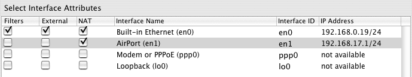

IP Interfaces and NAT
Configure Internet Sharing
To configure Internet sharing, begin by setting up any IP (Internet Protocol) interfaces you need using Mac OS X's Network Preferences Panel. Once your IP interfaces have been configured, you can then designate which interface will be used as your connection to the public Internet (External + NAT) under the Interfaces tab. Notice the Primary or External interface must normally be listed first since Mac OS X will use the router address from this IP interface as the Default Gateway. You can re-arrange the order by dragging them in the list of Network Port Configurations in the Network Preferences Panel.
To learn more about IP interfaces, see "What Is An IP Interface" below.
If you are not sure what interfaces you will need, see "What Interfaces Will I Need" below.
In this example we are connected to the Internet via Ethernet Built-in (en0) and will share this connection with other local hosts via AirPort (en1). If you want to use IPNetRouterX as an AirPort software base station, it is helpful to configure the AirPort data link using the AirPort tool before you try to enable Internet sharing. You may also want to configure IPNetRouterX to act as a DHCP Server using the DHCP Server tool. In most cases, you can simply open the DHCP Server window and select "DHCP Server On".
Notice we have not enabled IP filtering on the internal interface since the default filter configuration would block access to common services. IP Forwarding was enabled automatically when we selected NAT on en0.
Port Mapping
To configure inbound port mapping, use the Port Mapping tab of an IPNetRouterX document window. For more information, refer to the Inbound Port Mapping page.
Other NAT Features
IPNetRouterX supports several advanced NAT features including Single Ethernet, Local NAT, Static NAT, Transparent Proxy, Automatic Failover, Load Balance, and one-way satellite or cable systems. With a few hints, IPNetRouterX will mostly configure itself.
Single Ethernet Configuration
To use a Single Ethernet configuration you need to create two IP interfaces on your single Ethernet in the Network Preferences panel. Select "Show Port Configurations", click on your Ethernet configuration, and then press "Duplicate". You should now have two IP interfaces for the same Ethernet. You might name one "Ethernet WAN" and the other "Ethernet LAN" so you don't confuse them. Use the Network Preferences panel to configure each one as needed. The first one listed under "Show Port Configurations" should be your external WAN interface. For the internal LAN interface you can leave the Router and Name Server fields empty since the network stack will use the values from the first interface listed. Under the IPNetRouterX Interfaces tab, indicate which interface is external and enable NAT on this interface. IPNetRouterX will figure out the rest. When you enable NAT for the external interface, IPNetRouterX should report it detected another internal interface on this port and enable IP forwarding as shown in the figure below.
Notice for the Single Ethernet configuration we have not enabled IP filtering on our single Ethernet for two reasons: (1) Since our single Ethernet is used for the internal interface, we don't want the default filter configuration to block access to common services; (2) Any filtering we perform will not prevent packets from being visible to other hosts on the network since the same physical Ethernet is used for both the internal and external connection.
Local NAT
Local NAT can be used to access port mapped hosts behind your gateway using their public IP address (or domain name) from behind your gateway. To use this feature, enable NAT translation on the corresponding Internal interface under the Interfaces tab. You can also use the DNS Server tool to map public domain names for hosts on your LAN.

Static NAT
Static NAT can be used to map a small number of public IP addresses to individual hosts behind your gateway so they are protected by the firewall while remaining externally visible. There are two steps:
- You need to create a corresponding IP interface for each address on the external side of your gateway using the Network Preferences panel. The reason for this is to enable the external side to respond to ARP for those addresses. Alternatively, you can publish ARP entries for these IP address directly as described below.
Notice each external interface should be marked "External" so IPNetRouterX doesn't try to establish a "Single Ethernet" configuration that bypasses NAT for traffic to or from the internal subnet. Since Filters and NAT are selected for en0 in the first row, the NKE (Network Kernel Extension) that performs these functions will be attached to the en0 data link and process all network traffic on that link (even if Filters and NAT are not checked in the 2nd and 3rd row).
If you prefer not to create these "dummy" interfaces (that will never receive any packets), you can use the "ARP" tab in the Routes tool to publish ARP entries for the desired IP addresses directly. In this case, you'll want to create a Proxy ARP entry for each IP address on the corresponding network port (you can leave the HW Address field empty). Many network administrators find this approach easier to manage and document.

The "Save" column in the ARP table is used to tell IPNetRouterX you want to restore these entries the next time your settings are applied. Select File->Save to add these settings to the current configuration file. Many ARP entries are created by the system on the fly and should not be explicitly restored.
- You need to map each additional static address desired to a corresponding host on your LAN. You can do this under the Port Mapping tab by mapping the public IP address to the corresponding private IP address on your LAN for port 0 (all ports) and protocol 0 (any).
An alternative to Static NAT is to use Ethernet bridging if you have an additional Ethernet card that can be used to create a public LAN segment (sometimes called a DMZ).
Transparent Proxy
A "Proxy" is a program or server that acts on behalf of another. A "caching web proxy server" for example is typically a single local server that clients access to request web pages. The server would then search its cache to see if it already has the page and return it directly so it only needs to go out on the public Internet to retrieve the page once. If you have a classroom or office full of computers that frequently access the same web pages, this can save significant network bandwidth.
Proxy servers can also be used to provide strong firewall protection. If a proxy server is the only host allowed to send or receive traffic outside the firewall, then you can focus on securing that single server and require all other hosts inside the firewall to go through the proxy. By controlling what proxy services are provided, a firewall can effectively limit peer-to-peer protocols that aggressively look for open ports to tunnel through. A proxy server might also require users to login before granting access to the network, or provide strong content control by using a publicly maintained real time black lists (RBL) to limit access to URLs by category. Mac OS X's UNIX roots provide access to powerful open source proxy servers including Squid and DansGaurdian.
In traditional proxying, the client specifies the hostname and port number of a proxy in its web browsing software. The browser then makes requests to the proxy, and the proxy forwards them to the origin servers. This is all fine and good, but sometimes one of several situations arise. Either
• You want to force clients on your network to use the proxy, whether they want to or not.
• You want clients to use a proxy, but don't want them to know they're being proxied.
• You want clients to be proxied, but don't want to go to all the work of updating the settings in hundreds or thousands of web browsers.
This is where transparent proxying comes in. A web request can be intercepted by the proxy, transparently. That is, as far as the client software knows, it is talking to the origin server itself, when it is really talking to the proxy server. (Note that the transparency only applies to the client; the server knows that a proxy is involved, and will see the IP address of the proxy, not the IP address of the user. Although, squid may pass an X-Forwarded-For header, so that the server can determine the original user's IP address if it groks that header).
Cisco routers support transparent proxying. With IPNetRouterX, Mac OS X can act as a router, and can perform transparent proxying by redirecting TCP connections to local ports. The basic technique is to setup an inbound port mapping that specifies a wildcard (match any IP address) as the Apparent endpoint.
Under the Interfaces tab, we enable NAT on both the External and Internal port similar to "Local NAT" so that packets arriving from our LAN can be redirected.
Under the Port Mapping tab we specify an inbound mapping with Apparent Address "0.0.0.0 (any)". Any HTTP request to port 80 will now be redirected to a proxy server on our LAN at 192.168.17.10 except for requests from the proxy server itself (which allows the proxy server to retrieve the actual pages from the public Internet). Notice the proxy server can also run on the gateway machine itself (Actual Address 192.168.17.1 for example), and use a different port (such as 8080) if desired.
Transparent Proxying allows you to redirect client requests without any special configuration or knowledge at the client. Using a proxy server like Squid (or Maxum's iAssist), you can accelerate Web access for your entire network, track access usage, filter inappropriate content, improve network security, or just control how your network is used.
One Way or Telco-Return
For satellite or telco-return type systems, you need to enable NAT on both
the send and receive external interfaces so that packets masqueraded by the
send interface can be de-masqueraded by the receive interface even though
it uses a different network port.
Network To Exclude From NAT
If you have a range of public IP addresses (a so called IP subnet) you want to use on your LAN while allowing other hosts (possibly on a different Ethernet) to use private IP addresses, you can designate your public address range as a "Network To Exclude from NAT". This allows packets to or from the corresponding IP subnet to pass through the gateway unmodified while enabling NAT for all other packets. This feature has been replaced by the much simpler "Unregistered Only" option under the Port Mapping tab.
Ethernet Bridging
Ethernet Bridging is another technique for passing traffic between two Ethernets or Ethernet like devices such as AirPort. Where routing uses the IP address or network number to decide which traffic to pass between two networks, Ethernet bridging relies entirely on the Ethernet hardware address so does not require you to assign IP addresses from a different subnet on each side of your gateway. Ethernet bridging is like using an Ethernet Switch or hub to connect two network segments. Although you can buy a hardware bridge inexpensively, the advantage of Ethernet bridging in software is that you can still use the firewall to filter or log packets and you can extend any wired Ethernet segment to AirPort wireless without regard to IP addresses our routing.
Example 1: suppose you have an AirPort base station connected to a cable modem which provides Internet access to other computers in your home. By enabling Ethernet bridging on one of those computers, any devices attached to the Ethernet port on that computer (such as a printer or pre-AirPort Macintosh) becomes part of your Local Area Network. No additional routing or network address translation is required.
Example 2: suppose you already have a router that connects your LAN to the Internet and want to insert a firewall between that router and the Internet. With Ethernet bridging, you can simply plug a Mac with two Ethernet ports into any cable segment to insert a firewall. You can add a second Ethernet port using a USB-To-Ethernet adaptor if desired.
Example 3: suppose you have several public IP addresses you would like to use for servers but not enough to cover all the hosts on your private LAN. If you have 3 Ethernet ports, you can use one Ethernet as your External or WAN interface with NAT enabled. Then use a second Ethernet as your Internal interface that connects to your private LAN. Finally, you can use the 3rd Ethernet for a second LAN segment with public IP addresses for your servers (sometimes called a DMZ). To connect this DMZ to the public Internet, enable Ethernet Bridging between your External WAN port and the DMZ. Any servers attached to your DMZ are protected behind your firewall but bridged to the public Internet so no address translation is necessary.
To enable Ethernet bridging, select the Ethernet compatible network ports you want to bridge under the "Bridge" column in the Interfaces table. Although bridging does not require an IP address to be assigned, Mac OS X may not retain a network port as active unless it is configured with an IP address in the Network Preferences Panel. You can assign any convenient IP address from the same IP subnet.
Automatic Failover, Load Balancing, and Source Aware Routing
IPNetRouterX allows you to specify a second gateway or router address to use as a backup in case the first default gateway (router address in the Network Preferences Panel) becomes unavailable. Please refer to the Alternate Route tool for more information.
Configuring LAN Clients
This section describes how to configure other hosts attached to your LAN that will share your Internet connection. In order to use any device on a TCP/IP network, it must be configured with four pieces of information:
- IP Address
- Subnet Mask
- Router Address
- Name Server Address
Depending the specific device you want to use, you may need to enter this information manually or specify that the information is to be obtained automatically using some other mechanism like DHCP (Dynamic Host Configuration Protocol). If the device has more than one network port (such as Ethernet, AirPort, or PPP dialup), you may need to specify which port to use as well. IPNetRouterX doesn't care what kind of device it is as long as it does industry standard TCP/IP.
For manual configuration, look for a corresponding network control panel that allows you to enter values for these four parameters. For DHCP, you will need to to configure IPNetRouterX to act as a DHCP Server using the DHCP Server tool. In most cases, you can simply open the DHCP Server window and select "DHCP Server On".
Next, you need to determine what values to use. For the IP Address, you will use one address from the range of IP addresses you decided to use for your LAN (Local Area Network). See "What Interfaces Will I Need" and "Specifying a Range of IP Addresses" below. The Subnet Mask will also be determined by this range of addresses and should match the subnet mask of the LAN interface on your gateway machine. The Router Address will be that of the LAN interface on your gateway machine. Finally, you need to make sure any LAN clients are configured with a valid Name Server Address. Your ISP should have given you a name server address to use, or you can determine this by examining the configuration of your gateway machine that is connected to the Internet. If your gateway machine is configured to act as a DHCP server, you can tell it to pass along whatever name server address it has been configured with by leaving the name server field empty in the Lease Options tab of the DHCP Server window.
Some NAT gateways provide a feature called DNS forwarding so that clients can use the Router Address as a name server and the gateway will forward such requests to the name server it has been configured with. This is especially convenient for PPP dialup where the correct name server address may be unknown until the gateway has connected to a remote PPP server. The disadvantage of DNS forwarding is that clients to not have the actual name server address for handling more advanced querries the router may not recognize. I recommend using DHCP or entering a valid Name Server address manually since this offers the best compatibility and robustness. A future version of IPNetRouterX may add support for a local caching name server which provides both DNS forwarding and improved performance for accessing locally stored DNS information.
What Is An IP Interface?
The concept of a network interface can be confusing to people new to networking terminology so it may help to clarify exactly what we mean by this. When we talk about "PPP over Ethernet" (PPPoE) for example, is this a PPP interface or an Ethernet interface? [Answer: it's a PPP interface typically identified as "ppp0" to the IP routing layer.]
From outside the computer, a network interface may appear to be the Ethernet jack or internal modem, but these are more accurately described as network ports or devices. Within the computer, an IP interface is a data structure specifying various interface attributes like its IP address and mask and some code for handling messages associated with that structure. Thus a single port can have more than one IP interface. What's significant is that an interface defines a protocol, a set of messages that we're interested in, and some code for processing them. In practical systems, parts of the data structure that defines an IP interface may be implemented in more than one place. Some in the IP layer of the BSD stack, some in the Network Preferences Panel (System Configuration Framework), and some in Extensions that provide other services such as IP filtering, Network Address Translation, PPP (Point-to-Point Prococol), or secure communcation using PPTP or IPSec.
Within Mac OS X, the part of the IP interface data structure defined in the IP layer of the BSD stack is identified by a device name (such as "en0" or "ppp0") while the part defined in the System Configuration framework is identified by a Service ID (a so called UUID or Universal Unique Identifier such as: "FF414B0D-87ED-11D8-B1D9-000A95EEE352"). Since these UUIDs are machine specific and rather long, IPNetRouterX adopts a notation used by other UNIX systems of identifying additional IP interfaces on the same physical port by appending an index as in "en0:1" to to form a unique Interface ID. In this example "en0:1" indicates the second IP interface on en0 with the first interface being "en0:0" (which is abbreviated as just "en0"). Internally IPNetRouterX uses the corresponding device name or UUID as needed for communicating with other system components. The purpose of these "Interface IDs" is simply to correllate the separate pieces of the IP interface data structure wherever they appear.
The Network Preferences Panel also provides a "User Name" for each network service, but at the time of this writing, these User Names are not available to 3rd party applications like IPNetRouterX. IPNetRouterX displays the Interface Name as the Port Name followed by the Device Name in parentheses (both of which you can edit) and a unique Interface ID as described above. By convention, "en0" (Ethernet 0) is used for Ethernet Built-in, while "en1" is used for AirPort or the first PCI Ethernet card if there is one. "ppp0" is used for the first PPP device which could be associated with a modem or PPPoE. "lo0" refers to the loopback interface used for interprocess communication.
Since Apple is free to enhance the IP interface data structure as defined in the Network Preferences Panel (System Configuration Framework), the Interface panel in IPNetRouterX does not try to emulate or replace the Network Preferences Panel, but rather works along side it to provide additional interface attributes.
If you change locations in the Network Preferences Panel, IPNetRouterX may interpret new interfaces as ones being added to the previous configuration and assign them new InterfaceIDs. To have IPNetRouterX rescan the entire list of available interfaces, press the "Refresh List" button.
What Interfaces Will I Need?
This section provides a brief introduction to what IP interfaces you will need to configure basic Internet Sharing. As we noted above, IP interfaces are used to define a set of messages (network traffic) that we're interested in processing. As your needs for sharing information expand, you may wish to create additional IP interfaces for other uses. In order to share a single Internet connection, your computer will need two IP interfaces. An "external" interface to communicate with the public Internet, and an "internal" interface to communicate with other hosts on your local network (LAN). The external interface will normally be determined by how you connect to the Internet, whether by dialup modem, cable modem, DSL, AirPort wireless, or other mechanism. Normally this interface should be listed first since Mac OS X will use the router address from this IP interface as the Default Gateway. You can re-arrange the order by dragging them in the list of Network Port Configurations in the Network Preferences Panel.
The internal interface will normally be one that you create to communicate between hosts on your local network. The first step in configuring this interface is to determine how your local computers will physically communicate with each other, whether by Ethernet, AirPort, Firewire, or some other mechanism. This determines the network port you will use. Next, you will need to determine a range of IP addresses your local computers can use to identify each other so that each computer can be assigned one IP address from this range. These IP addresses are sometimes referred to as "private" because they are only used for your own machines to talk to each other. The Internet community has set aside two ranges of IP address specifically for private networks. They are 192.168.x.x and 10.x.x.x where "x" represents a number between 0-255. The first part of the address that identifies the range is called the "network number", while the second part of the address that identifies a unique address within that range is called the "host number". For small networks, it is common to use a range of 256 addresses such as 192.168.0.x . The addresses with host number 0 and 255 are reserved for communicating with all the hosts in that range (broadcasting), so it is common to assign the internal IP interface of the gateway machine as host number "1", and number any other hosts on your local network sequentially from there. If network range "192.168.0.x" is already in use by your ISP or some other part of your network, then it will be necessary to choose a different range like "192.168.17.x" or "10.0.17.x".
Internal Versus External Interfaces
A NAT router is a device for connecting two (or more) networks. Normally the public Internet and a private LAN. The interfaces attached to the public Internet (WAN) are external, while the interfaces attached to your private LAN are internal. "External" and "internal" in this context refer to which network the interface is attached to. The NAT engine needs this information to know how to translate packets to or from the corresponding interface.
Specifying a Range of IP Addresses
The concept of routing packets based on their corresponding range of IP addresses is central to the design of the Internet and has evolved over time resulting in several different terms and notations being used.
A "subnet mask" or "prefix length" is just a convenient shorthand for specifying a range of IP addresses. An IP address can be represented as a 32-bit binary number. To define a range of addresses, we divide these 32-bits into a network part and a host part. The subnet mask or prefix length tells us where the split occurs. If our gateway machine is assigned a local address of 192.168.0.1 and we want to indicate that this is from a range of 256 addresses, we can write this as 192.168.0.1/24 where the "/24" is the prefix length and indicates that the first 24-bits are used as the network part. Alternativey, we can specify a subnet mask of 255.255.255.0 which effectively says the same thing. The Subnet Calculator tool in IPNetRouterX is useful for converting between IP address ranges, subnet masks, prefix lengths, network numbers, and host numbers.
A range of IP addresses defined by a subnet mask is sometimes called an "IP subnet". Some references use the term "network mask" in place of subnet mask. Historically, subnet masks were not required to be contiguous (all 1's follow by all 0's), but this practice is discouraged and no longer widely used because it was less efficient. As the Internet expanded, the need to keep routing and address assignment as efficient as possible became more important. Specifying network ranges as an IP address and prefix length is the preferred technique adopted by the next generation of Internet Protocols, and is sometimes referred to as "CIDR notation" (Classless Inter-Domain Routing).
Internet Sharing Checklist
When configuring Internet Sharing, it's easy to miss a step if you are not sure what TCP/IP needs in order to work. Here are the basic steps you will need.
- You need to create two IP interfaces with the correct IP address and masks in the network preferences panel. You need to arrange them in the correct order. You need to specify a valid router address and name server address for the primary interface that is listed first.
- Then run IPNetRouterX. Check External and NAT for the primary interface only.
- Next, make sure any clients on your LAN have the correct IP address, mask, router address, and name server address.
- Notice setting up IPNetRouterX is relatively easy. It's getting everything else right that's hard. If it doesn't work right away, don't forget to check the settings in the Network Preferences panel on your gateway and any client machines. The most common problem seems to be specifying the correct Name Server address.
Troubleshooting Hints
Use Apple's Console.app to examine the "system.log" for any error messages.
Check that the built-in firewall and Internet sharing are turned off. [The built-in firewall configuration may conflict with Internet sharing on some versions of Mac OS X.]
Disable any unnused network ports like IP-over-firewire in the Network Preferences.
Try restarting your system.
Note to Upgrade Customers
Since Mac OS X uses an entirely different network stack, there is no correlation between interfaces defined under Mac OS 9 (Open Transport) and those defined under Mac OS X (BSD Networking). This means you cannot use your previous IPNetRouter configuration file.
Notice also that IPNetRouterX does not implement the DNS Forwarding feature of IPNetRouter classic, but supports configuring a Local Caching Name Server instead. If you have any LAN clients that use the router address as their name server address, you can use the DNS Server tool in IPNetRouterX to configure a Local DNS, or update the clients to specify the address of an actual DNS server as provided by your ISP. If your clients are configured using DHCP, you should check that the DHCP Server in IPNetRouterX is setup to hand out the DNS address it received from your ISP or has been configured with.
Previous | Next | Return to IPNetRouterX Help